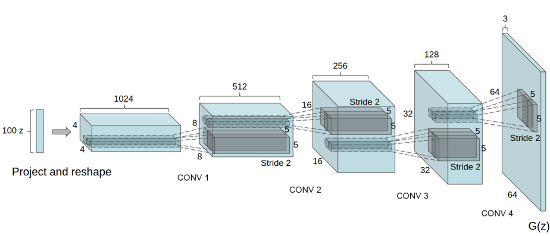
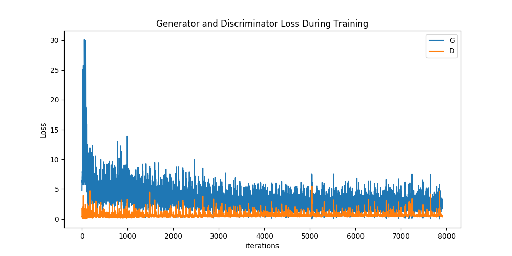

DCGAN 教程
作者: Nathan Inkawhich
校验: 片刻
介绍
本教程将通过一个例子来介绍DCGAN。我们将使用很多真正的名人照片训练一个生成对抗网络(GAN）后，生成新的假名人照片。这里的大多数代码来自于pytorch/examples中对DCGAN的实现，并且本文档将对DCGAN的实现进行全面解释，并阐明该模型是怎样工作的以及为什么能工作。但是不要担心，我们并不需要你事先了解GAN，但是可能需要先花一些时间来弄明白实际发生了什么。 此外，拥有一两个GPU将对节省运行时间很有帮助。 让我们从头开始吧。
对抗生成网络
什么是对抗生成网络(GAN)?
对抗生成网络(GAN）是一个教深度模型获取训练数据分布的一种框架，因此我们能够使用类似的分布来生成新的数据。对抗生成网络是Ian Goodfellow在2014年发明的，并首次发表在文章 Generative Adversarial Nets中。它们由两种不同的模块组成，一个生成器 generator 以及一个判别器 discriminator 。生成器的工作是产生看起来像训练图像的“假”图像。 判别器的工作是查看图像并输出它是否是来自真实训练图像或生成器的伪图像。在训练期间，生成器不断尝试通过产生越来越好的假图片来超越判别器，与此同时判别器逐渐更好的检测并正确分类真假图片。 这个过程最后逐渐的变得平衡，生成器生成完美的假图片，这些假图片看起来好像它们直接来自训练数据，并且判别器总是猜测生成器输出的图片真假都是50%。
现在，我们先定义一些整个教程中要使用的符号，首先从判别器开始。 \(\(x\)\) 表示图像数据。\(\(D(x)\)\) 表示判别网络，它的输出表示数据 \(\(x\)\) 来自与训练数据而不是生成数据的概率。这里 \(\(D(x)\)\) 的输入图像是大小为3x64x64。 直观地说，当 \(\(x\)\) 来自训练数据时，\(\(D(x)\)\)的值应当是大的；而当 \(\(x\)\) 来自发生器时，\(\(D(x)\)\) 的值应为小的。 \(\(D(x)\)\) 也可以被认为是传统的二元分类器。
对于生成器 \(\(z\)\) 表示从标准正态分布中采样的空间矢量(本征向量）。 \(\(G(z)\)\) 表示将本征向量 \(\(z\)\) 映射到数据空间的生成器函数。 \(\(G\)\) 的目标是估计训练数据来自的分布 \(\(p_{data}\)\) ，这样就可以从估计的分布 \(\(p_g\)\) 中生成假样本。
因此，\(\(D(G(z))\)\) 表示生成器输出\(\(G\)\)是真实图片的概率。就像在 Goodfellow's paper中描述的那样，\(\(D\)\) 和 \(\(G\)\) 在玩一个极大极小游戏。在这个游戏中 \(\(D\)\) 试图最大化正确分类真假图片的概率 \(\(logD(x)\)\) ，\(\(G\)\) 试图最小化 \(\(D\)\) 预测其输出为假图片的概率 \(\(log(1-D(G(x)))\)\) 。文章中GAN的损失函数是
\( \underset{G}{\text{min}} \underset{D}{\text{max}}V(D,G) = \mathbb{E}{x\sim p{data}(x)}\big[logD(x)\big] + \mathbb{E}{z\sim p{z}(z)}\big[log(1-D(G(x)))\big] \)
理论上，这个极小极大游戏的目标是 \(\(p_g=p_{data}\)\)，如果输入是真实的或假的，则判别器会随机猜测。 然而，GAN的收敛理论仍在积极研究中，实际上模型并不总是训练到这一点。
什么是DCGAN?
DCGAN是对上面描述的GAN的直接扩展，除了它分别在判别器和生成器中明确地使用卷积和卷积转置层。 DCGAN是在Radford等的文章Unsupervised Representation Learning With Deep Convolutional Generative Adversarial Networks中首次被提出的。判别器由卷积层、批标准化 层以及LeakyReLU 激活层组成。输入是3x64x64的图像，输出是输入图像来自实际数据的概率。生成器由转置卷积层，批标准化层以及ReLU 激活层组成。 输入是一个本征向量(latent vector） \(\(z\)\)，它是从标准正态分布中采样得到的，输出是一个3x64x64 的RGB图像。 转置卷积层能够把本征向量转换成和图像具有相同大小。 在本文中，作者还提供了一些有关如何设置优化器，如何计算损失函数以及如何初始化模型权重的建议，所有这些都将在后面的章节中进行说明。
from __future__ import print_function
#%matplotlib inline
import argparse
import os
import random
import torch
import torch.nn as nn
import torch.nn.parallel
import torch.backends.cudnn as cudnn
import torch.optim as optim
import torch.utils.data
import torchvision.datasets as dset
import torchvision.transforms as transforms
import torchvision.utils as vutils
import numpy as np
import matplotlib.pyplot as plt
import matplotlib.animation as animation
from IPython.display import HTML
# 为了可重复性设置随机种子
manualSeed = 999
#manualSeed = random.randint(1, 10000) # 如果你想有一个不同的结果使用这行代码
print("Random Seed: ", manualSeed)
random.seed(manualSeed)
torch.manual_seed(manualSeed)
输出:
变量
为了能够运行，定义一些变量：
- dataroot - 数据集文件夹的路径。我们将在后面的章节中讨论更多关于数据集的内容
- workers - 数据加载器DataLoader加载数据时能够使用的进程数
- batch_size - 训练时的批大小。在DCGAN文献中使用的批大小是128
- image_size - 训练时使用的图片大小。 这里设置默认值为 64x64\ 。如果想使用别的大小，生成器G和判别器D的结构也要改变。 想看更多详细内容请点击这里
- nc - 输入图片的颜色通道个数。彩色图片是3
- nz - 本征向量的长度
- ngf - 生成器使用的特征图深度
- ndf - 设置判别器使用的特征图的深度
- num_epochs - 一共训练多少次。训练次数多很可能产生更好的结果但是需要训练更长的时间
- lr - 训练时的学习率，DCGAN文章中使用的是0.0002
- beta1 - Adam优化算法的beta1超参数。文章用使用的是0.5
- ngpu - 可利用的GPU数量，如果设置为0则运行在CPU模式。如果设置的大于0则再行在那些数量的GPU
# 数据集根目录
dataroot = "data/celeba"
# 数据加载器能够使用的进程数量
workers = 2
# 训练时的批大小
batch_size = 128
# 训练图片的大小，所有的图片给都将改变到该大小
# 转换器使用的大小.
image_size = 64
# 训练图片的通道数，彩色图片是3
nc = 3
# 本征向量z的大小(生成器的输入大小)
nz = 100
# 生成器中特征图大小
ngf = 64
# 判别器中特征图大小
ndf = 64
# 训练次数
num_epochs = 5
# 优化器学习率
lr = 0.0002
# Adam优化器的Beta1超参
beta1 = 0.5
# 可利用的GPU数量，使用0将运行在CPU模式。
ngpu = 1
数据
本教程中我将使用 Celeb-A Faces 数据集 可以在链接中下载，或者在 谷歌网盘中下载。下载该数据集将产生一个名为 img_align_celeba.zip 的文件。 下载完成后，创建一个名为 celeba 的文件夹解压下载的数据集到该目录下。然后，在本笔记中设置 dataroot 到你刚才创建的文件夹 celeba 。最后得到的文件夹结构如下：
这是一个很重要的步骤，因为我们将使用ImageFolder数据集类需要使用在数据集根目录下的子文件夹。现在，我们能够创建这个数据集，创建数据加载器以及设置在哪运行，最后可视化一些训练数据。
# 我们能够使用我们创建的数据集图片文件夹了
# 创建数据集
dataset = dset.ImageFolder(root=dataroot,
transform=transforms.Compose([
transforms.Resize(image_size),
transforms.CenterCrop(image_size),
transforms.ToTensor(),
transforms.Normalize((0.5, 0.5, 0.5), (0.5, 0.5, 0.5)),
]))
# 创建数据加载器
dataloader = torch.utils.data.DataLoader(dataset, batch_size=batch_size,
shuffle=True, num_workers=workers)
# 决定我们在哪个设备上运行
device = torch.device("cuda:0" if (torch.cuda.is_available() and ngpu > 0) else "cpu")
# 展示一些训练图片
real_batch = next(iter(dataloader))
plt.figure(figsize=(8,8))
plt.axis("off")
plt.title("Training Images")
plt.imshow(np.transpose(vutils.make_grid(real_batch[0].to(device)[:64], padding=2, normalize=True).cpu(),(1,2,0)))

实现方法(implementation）
随着我们变量的设置以及数据集的准备，我们将开始详细的介绍权重初始化策略、生成器、判别器、损失函数以及训练过程。
权重初始化
在DCGAN论文中，作者指出所有模型权重应从均值为0方差为0.2的正态分布随机初始化。 weights_init函数将未初始化模型作为输入，并初始化所有卷积，卷积转置和批标准化层以满足此标准。 初始化后立即将此功能应用于模型。
# 在netG和netD上调用的自定义权重初始化函数
def weights_init(m):
classname = m.__class__.__name__
if classname.find('Conv') != -1:
nn.init.normal_(m.weight.data, 0.0, 0.02)
elif classname.find('BatchNorm') != -1:
nn.init.normal_(m.weight.data, 1.0, 0.02)
nn.init.constant_(m.bias.data, 0)
生成器
生成器 \(\(G\)\) 用于将本征向量 \(\(z\)\) 映射到数据空间。 由于我们的数据是图像，因此将 \(\(z\)\) 转换为数据空间意味着最终创建一个与训练图像大小相同的RGB图像(即3x64x64）。 实际上，这是通过一系列跨步的二维卷积转置层实现的，每个转换层与二维批标准化层和relu激活层配对。 生成器的输出通过tanh层，使其输出数据范围和输入图片一样，在 \(\([-1, 1]\)\) 之间。 值得注意的是在转换层之后存在批标准化函数，因为这是DCGAN论文的关键贡献。 这些层有助于训练期间的梯度传播。 DCGAN论文中的生成器图片如下所示。

请注意，我们在变量定义部分 (nz, ngf 和 nc) 中设置的输入如何影响代码中的生成器体系结构。 nz 是z输入向量的长度，ngf 生成器要生成的特征图个数大小，nc 是输出图像中的通道数(对于RGB图像，设置为3）。 下面是生成器的代码。
# 生成器代码
class Generator(nn.Module):
def __init__(self, ngpu):
super(Generator, self).__init__()
self.ngpu = ngpu
self.main = nn.Sequential(
# 输入是 Z, 对Z进行卷积
nn.ConvTranspose2d( nz, ngf * 8, 4, 1, 0, bias=False),
nn.BatchNorm2d(ngf * 8),
nn.ReLU(True),
# 输入特征图大小. (ngf*8) x 4 x 4
nn.ConvTranspose2d(ngf * 8, ngf * 4, 4, 2, 1, bias=False),
nn.BatchNorm2d(ngf * 4),
nn.ReLU(True),
# 输入特征图大小. (ngf*4) x 8 x 8
nn.ConvTranspose2d( ngf * 4, ngf * 2, 4, 2, 1, bias=False),
nn.BatchNorm2d(ngf * 2),
nn.ReLU(True),
# 输入特征图大小. (ngf*2) x 16 x 16
nn.ConvTranspose2d( ngf * 2, ngf, 4, 2, 1, bias=False),
nn.BatchNorm2d(ngf),
nn.ReLU(True),
# 输入特征图大小. (ngf) x 32 x 32
nn.ConvTranspose2d( ngf, nc, 4, 2, 1, bias=False),
nn.Tanh()
# 输入特征图大小. (nc) x 64 x 64
)
def forward(self, input):
return self.main(input)
现在，我们可以实例化生成器并对其使用 weights_init 函数。打印出生成器模型，用以查看生成器的结构。
# 创建生成器
netG = Generator(ngpu).to(device)
# 如果期望使用多个GPU，设置一下。
if (device.type == 'cuda') and (ngpu > 1):
netG = nn.DataParallel(netG, list(range(ngpu)))
# 使用权重初始化函数 weights_init 去随机初始化所有权重
# mean=0, stdev=0.2.
netG.apply(weights_init)
# 输出该模型
print(netG)
Out:
Generator(
(main): Sequential(
(0): ConvTranspose2d(100, 512, kernel_size=(4, 4), stride=(1, 1), bias=False)
(1): BatchNorm2d(512, eps=1e-05, momentum=0.1, affine=True, track_running_stats=True)
(2): ReLU(inplace)
(3): ConvTranspose2d(512, 256, kernel_size=(4, 4), stride=(2, 2), padding=(1, 1), bias=False)
(4): BatchNorm2d(256, eps=1e-05, momentum=0.1, affine=True, track_running_stats=True)
(5): ReLU(inplace)
(6): ConvTranspose2d(256, 128, kernel_size=(4, 4), stride=(2, 2), padding=(1, 1), bias=False)
(7): BatchNorm2d(128, eps=1e-05, momentum=0.1, affine=True, track_running_stats=True)
(8): ReLU(inplace)
(9): ConvTranspose2d(128, 64, kernel_size=(4, 4), stride=(2, 2), padding=(1, 1), bias=False)
(10): BatchNorm2d(64, eps=1e-05, momentum=0.1, affine=True, track_running_stats=True)
(11): ReLU(inplace)
(12): ConvTranspose2d(64, 3, kernel_size=(4, 4), stride=(2, 2), padding=(1, 1), bias=False)
(13): Tanh()
)
)
判别器
如上所述，判别器 \(\(D\)\) 是一个二分类网络，它将图像作为输入并输出输入图像是真实的概率(而不是假的）。 这里，\(\(D\)\) 采用3x64x64输入图像，通过一系列Conv2d，BatchNorm2d和LeakyReLU层处理它，并通过Sigmoid激活函数输出最终概率。 如果问题需要，可以使用更多层扩展此体系结构，但使用跨步卷积，BatchNorm和LeakyReLU具有重要意义。 DCGAN论文提到使用跨步卷积而不是使用pooling下采样是一种很好的做法，因为它可以让网络学习自己的pooling功能。批标准化和LeakyReLU函数也促进了健康的梯度流动，这对于 \(\(G\)\) 和 \(\(D\)\) 的学习过程至关重要。
判别器代码
class Discriminator(nn.Module):
def __init__(self, ngpu):
super(Discriminator, self).__init__()
self.ngpu = ngpu
self.main = nn.Sequential(
# 输入大小 (nc) x 64 x 64
nn.Conv2d(nc, ndf, 4, 2, 1, bias=False),
nn.LeakyReLU(0.2, inplace=True),
# state size. (ndf) x 32 x 32
nn.Conv2d(ndf, ndf * 2, 4, 2, 1, bias=False),
nn.BatchNorm2d(ndf * 2),
nn.LeakyReLU(0.2, inplace=True),
# 输入大小. (ndf*2) x 16 x 16
nn.Conv2d(ndf * 2, ndf * 4, 4, 2, 1, bias=False),
nn.BatchNorm2d(ndf * 4),
nn.LeakyReLU(0.2, inplace=True),
# 输入大小. (ndf*4) x 8 x 8
nn.Conv2d(ndf * 4, ndf * 8, 4, 2, 1, bias=False),
nn.BatchNorm2d(ndf * 8),
nn.LeakyReLU(0.2, inplace=True),
# 输入大小. (ndf*8) x 4 x 4
nn.Conv2d(ndf * 8, 1, 4, 1, 0, bias=False),
nn.Sigmoid()
)
def forward(self, input):
return self.main(input)
现在，我们可以实例化判别器并对其应用weights_init函数。查看打印的模型以查看判别器对象的结构。
# 创建判别器
netD = Discriminator(ngpu).to(device)
# 如果期望使用多GPU，设置一下
if (device.type == 'cuda') and (ngpu > 1):
netD = nn.DataParallel(netD, list(range(ngpu)))
# 使用权重初始化函数 weights_init 去随机初始化所有权重
# mean=0, stdev=0.2.
netD.apply(weights_init)
# 输出该模型
print(netD)
Out:
Discriminator(
(main): Sequential(
(0): Conv2d(3, 64, kernel_size=(4, 4), stride=(2, 2), padding=(1, 1), bias=False)
(1): LeakyReLU(negative_slope=0.2, inplace)
(2): Conv2d(64, 128, kernel_size=(4, 4), stride=(2, 2), padding=(1, 1), bias=False)
(3): BatchNorm2d(128, eps=1e-05, momentum=0.1, affine=True, track_running_stats=True)
(4): LeakyReLU(negative_slope=0.2, inplace)
(5): Conv2d(128, 256, kernel_size=(4, 4), stride=(2, 2), padding=(1, 1), bias=False)
(6): BatchNorm2d(256, eps=1e-05, momentum=0.1, affine=True, track_running_stats=True)
(7): LeakyReLU(negative_slope=0.2, inplace)
(8): Conv2d(256, 512, kernel_size=(4, 4), stride=(2, 2), padding=(1, 1), bias=False)
(9): BatchNorm2d(512, eps=1e-05, momentum=0.1, affine=True, track_running_stats=True)
(10): LeakyReLU(negative_slope=0.2, inplace)
(11): Conv2d(512, 1, kernel_size=(4, 4), stride=(1, 1), bias=False)
(12): Sigmoid()
)
)
损失函数和优化器
随着对判别器 \(\(D\)\) 和生成器 \(\(G\)\) 完成了设置， 我们能够详细的叙述它们怎么通过损失函数和优化器来进行学习的。我们将使用Binary Cross Entropy loss (BCELoss) 函数，其在pyTorch中的定义如下：
\( \ell(x, y) = L = {l_1,\dots,l_N}^\top, \quad l_n = - \left[ y_n \cdot \log x_n + (1 - y_n) \cdot \log (1 - x_n) \right] \)
需要注意的是目标函数中两个log部分是怎么提供计算的(i.e. \(\(log(D(x))\)\) and \(\(log(1-D(G(z)))\)\) 。 即将介绍的训练循环中我们将详细的介绍BCE公式的怎么使用输入 \(\(y\)\) 的。但重要的是要了解我们如何通过改变 \(\(y\)\)(即GT标签）来选择我们想要计算的部分损失。
下一步，我们定义真实图片标记为1，假图片标记为0。这个标记将在计算 \(\(D\)\) 和 \(\(G\)\) 的损失函数的时候使用，这是在原始的GAN文献中使用的惯例。最后我们设置两个单独的优化器，一个给判别器 \(\(D\)\) 使用，一个给生成器 \(\(G\)\) 使用。 就像DCGAN文章中说的那样，两个Adam优化算法都是用学习率为0.0002以及Beta1参数为0.5。为了保存追踪生成器学习的过程，我们将生成一个批固定不变的来自于高斯分布的本征向量(例如 fixed_noise)。在训练的循环中，我们将周期性的输入这个fixed_noise到生成器 \(\(G\)\) 中， 在训练都完成后我们将看一下由fixed_noise生成的图片。
# 初始化 BCE损失函数
criterion = nn.BCELoss()
# 创建一个批次的本征向量用于可视化生成器训练的过程。
fixed_noise = torch.randn(64, nz, 1, 1, device=device)
# 建立一个在训练中使用的真实和假的标记
real_label = 1
fake_label = 0
# 为G和D都设置Adam优化器
optimizerD = optim.Adam(netD.parameters(), lr=lr, betas=(beta1, 0.999))
optimizerG = optim.Adam(netG.parameters(), lr=lr, betas=(beta1, 0.999))
训练
最后，既然已经定义了GAN框架的所有部分，我们就可以对其进行训练。 请注意，训练GAN在某种程度上是一种艺术形式，因为不正确的超参数设置会导致mode collapse，而对错误的解释很少。 在这里，我们将密切关注Goodfellow的论文中的算法1，同时遵守ganhacks中显示的一些最佳实践。 也就是说，我们将“为真实和假冒”图像构建不同的小批量，并调整G的目标函数以最大化\(\(logD(G(z))\)\)。 训练分为两个主要部分。 第1部分更新判别器Discriminator，第2部分更新生成器Generator。
Part 1 - 训练判别器
回想一下，训练判别器的目的是最大化将给定输入正确分类为真实或假的概率。 就Goodfellow而言，我们希望“通过提升其随机梯度来更新判别器”。 实际上，我们想要最大化损失\(\(log(D(x))+ log(1-D(G(z)))\)\)。 由于ganhacks的单独小批量建议，我们将分两步计算。 首先，我们将从训练集中构造一批实际样本，向前通过 \(\(D\)\)，计算损失(\(\(log(D(x))\)\)），然后计算梯度 向后传递。 其次，我们将用当前的生成器构造一批假样本，通过\((D (\(转发该批次，计算损失(\)\)log(1-D(G(z)))\)\)）和 accumulate 带有向后传递。 现在，随着从全真实和全假批量累积的梯度，我们称之为Discriminator优化器的一步。
Part 2 - 训练生成器
正如原始论文所述，我们希望通过最小化 \(\(log(1-D(G(z)))\)\) 来训练生成器Generator，以便产生更好的假样本。 如上所述，Goodfellow表明这不会提供足够的梯度，尤其是在学习过程的早期阶段。 作为修改，我们希望最大化 \(\(log(D(G(z)))\)\)。 在代码中，我们通过以下方式实现此目的：使用 Discriminator 对第1部分的 Generator 输出进行分类，使用真实标签作为 GT计算G的损失，在反向传递中计算G的梯度，最后使用优化器步骤更新G的参数。使用真实标签作为损失函数的GT标签似乎是违反直觉的，但这允许我们使用BCELoss的 \(\(log(x)\)\) 部分(而不是 \(\(log(1-x)\)\) 这部分）这正是我们想要的。
最后，我们将进行一些统计报告，在每个循环结束时，我们将通过生成器推送我们的fixed_noise批次，以直观地跟踪G训练的进度。 报告的训练统计数据是：
- Loss_D - 判别器损失是所有真实样本批次和所有假样本批次的损失之和 \(\(log(D(x)) + log(D(G(z)))\)\) .
- Loss_G - 生成器损失 \(\(log(D(G(z)))\)\)
- D(x) - 所有真实批次的判别器的平均输出(整批）。 这应该从接近1开始，然后当G变好时理论上收敛到0.5。 想想为什么会这样。
- D(G(z)) - 所有假批次的平均判别器输出。 第一个数字是在D更新之前，第二个数字是在D更新之后。 当G变好时，这些数字应该从0开始并收敛到0.5。 想想为什么会这样。
Note: 此步骤可能需要一段时间，具体取决于您运行的循环数以及是否从数据集中删除了一些数据。
# 训练循环
# 保存跟踪进度的列表
img_list = []
G_losses = []
D_losses = []
iters = 0
print("Starting Training Loop...")
# 每个epoh
for epoch in range(num_epochs):
# 数据加载器中的每个批次
for i, data in enumerate(dataloader, 0):
############################
# (1) 更新 D 网络: 最大化 log(D(x)) + log(1 - D(G(z)))
###########################
## 使用所有真实样本批次训练
netD.zero_grad()
# 格式化批
real_cpu = data[0].to(device)
b_size = real_cpu.size(0)
label = torch.full((b_size,), real_label, device=device)
# 通过D向前传递真实批次
output = netD(real_cpu).view(-1)
# 对所有真实样本批次计算损失
errD_real = criterion(output, label)
# 计算后向传递中D的梯度
errD_real.backward()
D_x = output.mean().item()
## 使用所有假样本批次训练
# 生成本征向量批次
noise = torch.randn(b_size, nz, 1, 1, device=device)
# 使用生成器G生成假图片
fake = netG(noise)
label.fill_(fake_label)
# 使用判别器分类所有的假批次样本
output = netD(fake.detach()).view(-1)
# 计算判别器D的损失对所有的假样本批次
errD_fake = criterion(output, label)
# 对这个批次计算梯度
errD_fake.backward()
D_G_z1 = output.mean().item()
# 把所有真样本和假样本批次的梯度加起来
errD = errD_real + errD_fake
# 更新判别器D
optimizerD.step()
############################
# (2) 更新 G 网络: 最大化 log(D(G(z)))
###########################
netG.zero_grad()
label.fill_(real_label) # 假样本的标签对于生成器成本是真的
# 因为我们之更新了D，通过D执行所有假样本批次的正向传递
output = netD(fake).view(-1)
# 基于这个输出计算G的损失
errG = criterion(output, label)
# 为生成器计算梯度
errG.backward()
D_G_z2 = output.mean().item()
# 更新生成器G
optimizerG.step()
# 输出训练状态
if i % 50 == 0:
print('[%d/%d][%d/%d]\tLoss_D: %.4f\tLoss_G: %.4f\tD(x): %.4f\tD(G(z)): %.4f / %.4f'
% (epoch, num_epochs, i, len(dataloader),
errD.item(), errG.item(), D_x, D_G_z1, D_G_z2))
# 为以后画损失图，保存损失
G_losses.append(errG.item())
D_losses.append(errD.item())
# 检查生成器generator做了什么，通过保存的fixed_noise通过G的输出
if (iters % 500 == 0) or ((epoch == num_epochs-1) and (i == len(dataloader)-1)):
with torch.no_grad():
fake = netG(fixed_noise).detach().cpu()
img_list.append(vutils.make_grid(fake, padding=2, normalize=True))
iters += 1
Out:
Starting Training Loop...
[0/5][0/1583] Loss_D: 1.7410 Loss_G: 4.7761 D(x): 0.5343 D(G(z)): 0.5771 / 0.0136
[0/5][50/1583] Loss_D: 1.7332 Loss_G: 25.4829 D(x): 0.9774 D(G(z)): 0.7441 / 0.0000
[0/5][100/1583] Loss_D: 1.6841 Loss_G: 11.6585 D(x): 0.4728 D(G(z)): 0.0000 / 0.0000
[0/5][150/1583] Loss_D: 1.2547 Loss_G: 8.7245 D(x): 0.9286 D(G(z)): 0.5209 / 0.0044
[0/5][200/1583] Loss_D: 0.7563 Loss_G: 8.9600 D(x): 0.9525 D(G(z)): 0.4514 / 0.0003
[0/5][250/1583] Loss_D: 1.0221 Loss_G: 2.5713 D(x): 0.5274 D(G(z)): 0.0474 / 0.1177
[0/5][300/1583] Loss_D: 0.3387 Loss_G: 3.8185 D(x): 0.8431 D(G(z)): 0.1066 / 0.0461
[0/5][350/1583] Loss_D: 0.5054 Loss_G: 3.6141 D(x): 0.7289 D(G(z)): 0.0758 / 0.0535
[0/5][400/1583] Loss_D: 0.8758 Loss_G: 6.5680 D(x): 0.8097 D(G(z)): 0.4017 / 0.0031
[0/5][450/1583] Loss_D: 0.2486 Loss_G: 3.5121 D(x): 0.9035 D(G(z)): 0.1054 / 0.0717
[0/5][500/1583] Loss_D: 1.5792 Loss_G: 4.3590 D(x): 0.3457 D(G(z)): 0.0053 / 0.0379
[0/5][550/1583] Loss_D: 0.8897 Loss_G: 3.9447 D(x): 0.5350 D(G(z)): 0.0349 / 0.0386
[0/5][600/1583] Loss_D: 0.5292 Loss_G: 4.4346 D(x): 0.8914 D(G(z)): 0.2768 / 0.0233
[0/5][650/1583] Loss_D: 0.3779 Loss_G: 4.7253 D(x): 0.7868 D(G(z)): 0.0627 / 0.0174
[0/5][700/1583] Loss_D: 0.7512 Loss_G: 2.6246 D(x): 0.6112 D(G(z)): 0.0244 / 0.1493
[0/5][750/1583] Loss_D: 0.4378 Loss_G: 5.0045 D(x): 0.8614 D(G(z)): 0.2028 / 0.0108
[0/5][800/1583] Loss_D: 0.5795 Loss_G: 6.0537 D(x): 0.8693 D(G(z)): 0.2732 / 0.0066
[0/5][850/1583] Loss_D: 0.8980 Loss_G: 6.5355 D(x): 0.8465 D(G(z)): 0.4226 / 0.0048
[0/5][900/1583] Loss_D: 0.5776 Loss_G: 7.7162 D(x): 0.9756 D(G(z)): 0.3707 / 0.0009
[0/5][950/1583] Loss_D: 0.5593 Loss_G: 5.6692 D(x): 0.9560 D(G(z)): 0.3494 / 0.0080
[0/5][1000/1583] Loss_D: 0.5036 Loss_G: 5.1312 D(x): 0.7775 D(G(z)): 0.0959 / 0.0178
[0/5][1050/1583] Loss_D: 0.5192 Loss_G: 4.5706 D(x): 0.8578 D(G(z)): 0.2605 / 0.0222
[0/5][1100/1583] Loss_D: 0.5645 Loss_G: 3.1618 D(x): 0.7133 D(G(z)): 0.1138 / 0.0768
[0/5][1150/1583] Loss_D: 0.2790 Loss_G: 4.5294 D(x): 0.8541 D(G(z)): 0.0909 / 0.0207
[0/5][1200/1583] Loss_D: 0.5334 Loss_G: 4.3445 D(x): 0.8567 D(G(z)): 0.2457 / 0.0245
[0/5][1250/1583] Loss_D: 0.7318 Loss_G: 2.2779 D(x): 0.6846 D(G(z)): 0.1485 / 0.1497
[0/5][1300/1583] Loss_D: 0.6939 Loss_G: 6.1172 D(x): 0.9123 D(G(z)): 0.3853 / 0.0041
[0/5][1350/1583] Loss_D: 0.4653 Loss_G: 3.7054 D(x): 0.8208 D(G(z)): 0.1774 / 0.0404
[0/5][1400/1583] Loss_D: 1.9711 Loss_G: 3.1569 D(x): 0.2704 D(G(z)): 0.0108 / 0.1390
[0/5][1450/1583] Loss_D: 0.4427 Loss_G: 5.8683 D(x): 0.9230 D(G(z)): 0.2600 / 0.0056
[0/5][1500/1583] Loss_D: 0.4432 Loss_G: 3.3681 D(x): 0.8001 D(G(z)): 0.1510 / 0.0633
[0/5][1550/1583] Loss_D: 0.4852 Loss_G: 3.2790 D(x): 0.7532 D(G(z)): 0.1100 / 0.0661
[1/5][0/1583] Loss_D: 0.3536 Loss_G: 4.5358 D(x): 0.8829 D(G(z)): 0.1714 / 0.0173
[1/5][50/1583] Loss_D: 0.4717 Loss_G: 4.7728 D(x): 0.8973 D(G(z)): 0.2750 / 0.0142
[1/5][100/1583] Loss_D: 0.4702 Loss_G: 2.3528 D(x): 0.7847 D(G(z)): 0.1468 / 0.1385
[1/5][150/1583] Loss_D: 0.4833 Loss_G: 2.9645 D(x): 0.7893 D(G(z)): 0.1607 / 0.0867
[1/5][200/1583] Loss_D: 0.6035 Loss_G: 2.0728 D(x): 0.6646 D(G(z)): 0.0852 / 0.1806
[1/5][250/1583] Loss_D: 0.3822 Loss_G: 3.1946 D(x): 0.7969 D(G(z)): 0.1024 / 0.0656
[1/5][300/1583] Loss_D: 0.3892 Loss_G: 3.3337 D(x): 0.7848 D(G(z)): 0.0969 / 0.0525
[1/5][350/1583] Loss_D: 1.7989 Loss_G: 7.5798 D(x): 0.9449 D(G(z)): 0.7273 / 0.0011
[1/5][400/1583] Loss_D: 0.4765 Loss_G: 3.0655 D(x): 0.7479 D(G(z)): 0.1116 / 0.0687
[1/5][450/1583] Loss_D: 0.3649 Loss_G: 3.1674 D(x): 0.8603 D(G(z)): 0.1619 / 0.0627
[1/5][500/1583] Loss_D: 0.6922 Loss_G: 4.5841 D(x): 0.9235 D(G(z)): 0.4003 / 0.0175
[1/5][550/1583] Loss_D: 0.6126 Loss_G: 4.6642 D(x): 0.8761 D(G(z)): 0.3199 / 0.0180
[1/5][600/1583] Loss_D: 0.7032 Loss_G: 4.6221 D(x): 0.9463 D(G(z)): 0.4365 / 0.0154
[1/5][650/1583] Loss_D: 0.4707 Loss_G: 3.3616 D(x): 0.7664 D(G(z)): 0.1280 / 0.0617
[1/5][700/1583] Loss_D: 0.3393 Loss_G: 2.4236 D(x): 0.9120 D(G(z)): 0.1771 / 0.1280
[1/5][750/1583] Loss_D: 0.6828 Loss_G: 4.4585 D(x): 0.8647 D(G(z)): 0.3546 / 0.0191
[1/5][800/1583] Loss_D: 0.7958 Loss_G: 3.6708 D(x): 0.8386 D(G(z)): 0.3987 / 0.0403
[1/5][850/1583] Loss_D: 0.4651 Loss_G: 2.7477 D(x): 0.7602 D(G(z)): 0.1334 / 0.0900
[1/5][900/1583] Loss_D: 0.8799 Loss_G: 4.7930 D(x): 0.9050 D(G(z)): 0.4710 / 0.0201
[1/5][950/1583] Loss_D: 0.3909 Loss_G: 2.7973 D(x): 0.7730 D(G(z)): 0.0902 / 0.0838
[1/5][1000/1583] Loss_D: 0.3822 Loss_G: 3.0223 D(x): 0.8699 D(G(z)): 0.1837 / 0.0709
[1/5][1050/1583] Loss_D: 0.4689 Loss_G: 2.2831 D(x): 0.7096 D(G(z)): 0.0536 / 0.1448
[1/5][1100/1583] Loss_D: 0.6676 Loss_G: 2.2773 D(x): 0.6669 D(G(z)): 0.1386 / 0.1443
[1/5][1150/1583] Loss_D: 0.5970 Loss_G: 4.1558 D(x): 0.9166 D(G(z)): 0.3554 / 0.0240
[1/5][1200/1583] Loss_D: 0.3622 Loss_G: 3.5782 D(x): 0.8590 D(G(z)): 0.1547 / 0.0481
[1/5][1250/1583] Loss_D: 0.5234 Loss_G: 2.5915 D(x): 0.7811 D(G(z)): 0.1990 / 0.1037
[1/5][1300/1583] Loss_D: 1.3243 Loss_G: 5.5428 D(x): 0.9882 D(G(z)): 0.6572 / 0.0088
[1/5][1350/1583] Loss_D: 0.4891 Loss_G: 1.9552 D(x): 0.7686 D(G(z)): 0.1540 / 0.1910
[1/5][1400/1583] Loss_D: 0.5639 Loss_G: 3.7796 D(x): 0.9137 D(G(z)): 0.3390 / 0.0343
[1/5][1450/1583] Loss_D: 1.7329 Loss_G: 5.0373 D(x): 0.9760 D(G(z)): 0.7332 / 0.0161
[1/5][1500/1583] Loss_D: 0.7999 Loss_G: 3.7268 D(x): 0.9029 D(G(z)): 0.4550 / 0.0384
[1/5][1550/1583] Loss_D: 0.4740 Loss_G: 2.3220 D(x): 0.7824 D(G(z)): 0.1625 / 0.1327
[2/5][0/1583] Loss_D: 0.8693 Loss_G: 3.8890 D(x): 0.9376 D(G(z)): 0.4822 / 0.0339
[2/5][50/1583] Loss_D: 0.3742 Loss_G: 2.5041 D(x): 0.8148 D(G(z)): 0.1310 / 0.1151
[2/5][100/1583] Loss_D: 1.1134 Loss_G: 1.5167 D(x): 0.4248 D(G(z)): 0.0335 / 0.3023
[2/5][150/1583] Loss_D: 0.5987 Loss_G: 3.2047 D(x): 0.8536 D(G(z)): 0.3121 / 0.0555
[2/5][200/1583] Loss_D: 2.0846 Loss_G: 1.5473 D(x): 0.1919 D(G(z)): 0.0054 / 0.2899
[2/5][250/1583] Loss_D: 0.5017 Loss_G: 3.0225 D(x): 0.8965 D(G(z)): 0.2986 / 0.0626
[2/5][300/1583] Loss_D: 1.3296 Loss_G: 4.1927 D(x): 0.9444 D(G(z)): 0.6574 / 0.0270
[2/5][350/1583] Loss_D: 0.4905 Loss_G: 2.7693 D(x): 0.8049 D(G(z)): 0.2090 / 0.0863
[2/5][400/1583] Loss_D: 0.4668 Loss_G: 2.1790 D(x): 0.7160 D(G(z)): 0.0815 / 0.1529
[2/5][450/1583] Loss_D: 0.4877 Loss_G: 2.4190 D(x): 0.6943 D(G(z)): 0.0693 / 0.1254
[2/5][500/1583] Loss_D: 0.7856 Loss_G: 2.2362 D(x): 0.6148 D(G(z)): 0.1698 / 0.1489
[2/5][550/1583] Loss_D: 0.6371 Loss_G: 1.3879 D(x): 0.6164 D(G(z)): 0.0852 / 0.3041
[2/5][600/1583] Loss_D: 0.6409 Loss_G: 2.8623 D(x): 0.7658 D(G(z)): 0.2684 / 0.0790
[2/5][650/1583] Loss_D: 0.6454 Loss_G: 1.5708 D(x): 0.6293 D(G(z)): 0.0944 / 0.2706
[2/5][700/1583] Loss_D: 0.8472 Loss_G: 2.0847 D(x): 0.5071 D(G(z)): 0.0181 / 0.1937
[2/5][750/1583] Loss_D: 1.2356 Loss_G: 0.3673 D(x): 0.3606 D(G(z)): 0.0328 / 0.7270
[2/5][800/1583] Loss_D: 0.4852 Loss_G: 2.7325 D(x): 0.8670 D(G(z)): 0.2630 / 0.0877
[2/5][850/1583] Loss_D: 0.6494 Loss_G: 4.5357 D(x): 0.8899 D(G(z)): 0.3756 / 0.0158
[2/5][900/1583] Loss_D: 0.5184 Loss_G: 2.7194 D(x): 0.8377 D(G(z)): 0.2540 / 0.0871
[2/5][950/1583] Loss_D: 0.9771 Loss_G: 4.6200 D(x): 0.9596 D(G(z)): 0.5432 / 0.0176
[2/5][1000/1583] Loss_D: 0.7509 Loss_G: 2.2864 D(x): 0.5861 D(G(z)): 0.1021 / 0.1539
[2/5][1050/1583] Loss_D: 0.4512 Loss_G: 3.2484 D(x): 0.8649 D(G(z)): 0.2313 / 0.0542
[2/5][1100/1583] Loss_D: 0.6856 Loss_G: 2.2425 D(x): 0.6405 D(G(z)): 0.1333 / 0.1508
[2/5][1150/1583] Loss_D: 0.5271 Loss_G: 3.0327 D(x): 0.8385 D(G(z)): 0.2552 / 0.0639
[2/5][1200/1583] Loss_D: 0.4058 Loss_G: 2.9557 D(x): 0.8769 D(G(z)): 0.2169 / 0.0694
[2/5][1250/1583] Loss_D: 0.5564 Loss_G: 2.9065 D(x): 0.8409 D(G(z)): 0.2835 / 0.0695
[2/5][1300/1583] Loss_D: 0.4703 Loss_G: 2.7865 D(x): 0.7825 D(G(z)): 0.1680 / 0.0850
[2/5][1350/1583] Loss_D: 0.5352 Loss_G: 3.1362 D(x): 0.8260 D(G(z)): 0.2582 / 0.0606
[2/5][1400/1583] Loss_D: 0.5281 Loss_G: 2.7742 D(x): 0.7970 D(G(z)): 0.2275 / 0.0835
[2/5][1450/1583] Loss_D: 0.6558 Loss_G: 1.8152 D(x): 0.6103 D(G(z)): 0.0795 / 0.2030
[2/5][1500/1583] Loss_D: 0.9446 Loss_G: 1.1492 D(x): 0.4593 D(G(z)): 0.0356 / 0.3947
[2/5][1550/1583] Loss_D: 0.9269 Loss_G: 0.7383 D(x): 0.5226 D(G(z)): 0.1333 / 0.5205
[3/5][0/1583] Loss_D: 0.4855 Loss_G: 2.1548 D(x): 0.7157 D(G(z)): 0.1059 / 0.1568
[3/5][50/1583] Loss_D: 0.7259 Loss_G: 1.1093 D(x): 0.5804 D(G(z)): 0.0797 / 0.3894
[3/5][100/1583] Loss_D: 0.7367 Loss_G: 1.0389 D(x): 0.5515 D(G(z)): 0.0405 / 0.4190
[3/5][150/1583] Loss_D: 0.5942 Loss_G: 3.4803 D(x): 0.9290 D(G(z)): 0.3709 / 0.0432
[3/5][200/1583] Loss_D: 1.3464 Loss_G: 0.6549 D(x): 0.3261 D(G(z)): 0.0242 / 0.5949
[3/5][250/1583] Loss_D: 0.5110 Loss_G: 2.2086 D(x): 0.7263 D(G(z)): 0.1327 / 0.1457
[3/5][300/1583] Loss_D: 1.4272 Loss_G: 3.3018 D(x): 0.9230 D(G(z)): 0.6654 / 0.0635
[3/5][350/1583] Loss_D: 0.6491 Loss_G: 3.0766 D(x): 0.8124 D(G(z)): 0.3127 / 0.0607
[3/5][400/1583] Loss_D: 0.5583 Loss_G: 2.9363 D(x): 0.8233 D(G(z)): 0.2759 / 0.0666
[3/5][450/1583] Loss_D: 0.9496 Loss_G: 0.6436 D(x): 0.4958 D(G(z)): 0.1367 / 0.5538
[3/5][500/1583] Loss_D: 0.4463 Loss_G: 2.2234 D(x): 0.7776 D(G(z)): 0.1545 / 0.1371
[3/5][550/1583] Loss_D: 0.5874 Loss_G: 3.6688 D(x): 0.8478 D(G(z)): 0.2930 / 0.0348
[3/5][600/1583] Loss_D: 0.3724 Loss_G: 2.6326 D(x): 0.8673 D(G(z)): 0.1854 / 0.0891
[3/5][650/1583] Loss_D: 0.7292 Loss_G: 4.4254 D(x): 0.9081 D(G(z)): 0.4234 / 0.0200
[3/5][700/1583] Loss_D: 0.4728 Loss_G: 2.8665 D(x): 0.8189 D(G(z)): 0.2115 / 0.0774
[3/5][750/1583] Loss_D: 0.5845 Loss_G: 3.3046 D(x): 0.8977 D(G(z)): 0.3490 / 0.0463
[3/5][800/1583] Loss_D: 0.5597 Loss_G: 2.2564 D(x): 0.7088 D(G(z)): 0.1497 / 0.1300
[3/5][850/1583] Loss_D: 0.6518 Loss_G: 2.5048 D(x): 0.7195 D(G(z)): 0.2183 / 0.1053
[3/5][900/1583] Loss_D: 0.7340 Loss_G: 1.4263 D(x): 0.6285 D(G(z)): 0.1806 / 0.2818
[3/5][950/1583] Loss_D: 1.4633 Loss_G: 4.9204 D(x): 0.9792 D(G(z)): 0.7093 / 0.0143
[3/5][1000/1583] Loss_D: 0.6643 Loss_G: 2.8332 D(x): 0.8548 D(G(z)): 0.3597 / 0.0751
[3/5][1050/1583] Loss_D: 0.7741 Loss_G: 2.9355 D(x): 0.7281 D(G(z)): 0.3064 / 0.0712
[3/5][1100/1583] Loss_D: 0.7279 Loss_G: 3.2299 D(x): 0.8867 D(G(z)): 0.4193 / 0.0544
[3/5][1150/1583] Loss_D: 0.6049 Loss_G: 1.9150 D(x): 0.6917 D(G(z)): 0.1645 / 0.1912
[3/5][1200/1583] Loss_D: 0.7431 Loss_G: 3.8188 D(x): 0.9334 D(G(z)): 0.4500 / 0.0306
[3/5][1250/1583] Loss_D: 0.5061 Loss_G: 1.9905 D(x): 0.7393 D(G(z)): 0.1531 / 0.1653
[3/5][1300/1583] Loss_D: 0.6979 Loss_G: 3.0183 D(x): 0.8182 D(G(z)): 0.3421 / 0.0616
[3/5][1350/1583] Loss_D: 0.9133 Loss_G: 4.0629 D(x): 0.9198 D(G(z)): 0.5131 / 0.0261
[3/5][1400/1583] Loss_D: 0.7075 Loss_G: 4.0061 D(x): 0.9188 D(G(z)): 0.4216 / 0.0266
[3/5][1450/1583] Loss_D: 0.7704 Loss_G: 2.3802 D(x): 0.7555 D(G(z)): 0.3348 / 0.1114
[3/5][1500/1583] Loss_D: 0.6055 Loss_G: 1.8402 D(x): 0.7011 D(G(z)): 0.1643 / 0.1995
[3/5][1550/1583] Loss_D: 0.7240 Loss_G: 3.2589 D(x): 0.8747 D(G(z)): 0.4069 / 0.0528
[4/5][0/1583] Loss_D: 0.8162 Loss_G: 2.8040 D(x): 0.8827 D(G(z)): 0.4435 / 0.0870
[4/5][50/1583] Loss_D: 0.5859 Loss_G: 2.2796 D(x): 0.6782 D(G(z)): 0.1312 / 0.1309
[4/5][100/1583] Loss_D: 0.6655 Loss_G: 3.5365 D(x): 0.8178 D(G(z)): 0.3262 / 0.0394
[4/5][150/1583] Loss_D: 1.8662 Loss_G: 5.4950 D(x): 0.9469 D(G(z)): 0.7590 / 0.0113
[4/5][200/1583] Loss_D: 0.7060 Loss_G: 3.6253 D(x): 0.9215 D(G(z)): 0.4316 / 0.0364
[4/5][250/1583] Loss_D: 0.5589 Loss_G: 2.1394 D(x): 0.7108 D(G(z)): 0.1513 / 0.1548
[4/5][300/1583] Loss_D: 0.7278 Loss_G: 1.2391 D(x): 0.5757 D(G(z)): 0.0987 / 0.3454
[4/5][350/1583] Loss_D: 0.7597 Loss_G: 2.8481 D(x): 0.7502 D(G(z)): 0.3094 / 0.0843
[4/5][400/1583] Loss_D: 0.6167 Loss_G: 2.2143 D(x): 0.6641 D(G(z)): 0.1315 / 0.1405
[4/5][450/1583] Loss_D: 0.6234 Loss_G: 1.7961 D(x): 0.7303 D(G(z)): 0.2208 / 0.2007
[4/5][500/1583] Loss_D: 0.6098 Loss_G: 4.9416 D(x): 0.9442 D(G(z)): 0.3978 / 0.0104
[4/5][550/1583] Loss_D: 0.6570 Loss_G: 3.6935 D(x): 0.9180 D(G(z)): 0.4015 / 0.0312
[4/5][600/1583] Loss_D: 0.4195 Loss_G: 2.3446 D(x): 0.7798 D(G(z)): 0.1319 / 0.1211
[4/5][650/1583] Loss_D: 0.5291 Loss_G: 2.5303 D(x): 0.7528 D(G(z)): 0.1875 / 0.1075
[4/5][700/1583] Loss_D: 0.5187 Loss_G: 2.0350 D(x): 0.7174 D(G(z)): 0.1431 / 0.1547
[4/5][750/1583] Loss_D: 0.8208 Loss_G: 1.0780 D(x): 0.5665 D(G(z)): 0.1128 / 0.3844
[4/5][800/1583] Loss_D: 0.5223 Loss_G: 3.0140 D(x): 0.8708 D(G(z)): 0.2871 / 0.0612
[4/5][850/1583] Loss_D: 2.9431 Loss_G: 1.0175 D(x): 0.0914 D(G(z)): 0.0162 / 0.4320
[4/5][900/1583] Loss_D: 0.5456 Loss_G: 1.7923 D(x): 0.7489 D(G(z)): 0.1972 / 0.2038
[4/5][950/1583] Loss_D: 0.4718 Loss_G: 2.3825 D(x): 0.7840 D(G(z)): 0.1772 / 0.1172
[4/5][1000/1583] Loss_D: 0.5174 Loss_G: 2.5070 D(x): 0.8367 D(G(z)): 0.2556 / 0.1074
[4/5][1050/1583] Loss_D: 0.8214 Loss_G: 0.8055 D(x): 0.5181 D(G(z)): 0.0694 / 0.4963
[4/5][1100/1583] Loss_D: 1.3243 Loss_G: 0.7562 D(x): 0.3284 D(G(z)): 0.0218 / 0.5165
[4/5][1150/1583] Loss_D: 0.9334 Loss_G: 5.1260 D(x): 0.8775 D(G(z)): 0.4817 / 0.0088
[4/5][1200/1583] Loss_D: 0.5141 Loss_G: 2.7230 D(x): 0.8067 D(G(z)): 0.2188 / 0.0872
[4/5][1250/1583] Loss_D: 0.6007 Loss_G: 1.9893 D(x): 0.6968 D(G(z)): 0.1667 / 0.1748
[4/5][1300/1583] Loss_D: 0.4025 Loss_G: 2.3066 D(x): 0.8101 D(G(z)): 0.1471 / 0.1412
[4/5][1350/1583] Loss_D: 0.5979 Loss_G: 3.2825 D(x): 0.8248 D(G(z)): 0.3003 / 0.0509
[4/5][1400/1583] Loss_D: 0.7430 Loss_G: 3.6521 D(x): 0.8888 D(G(z)): 0.4243 / 0.0339
[4/5][1450/1583] Loss_D: 1.0814 Loss_G: 5.4255 D(x): 0.9647 D(G(z)): 0.5842 / 0.0070
[4/5][1500/1583] Loss_D: 1.7211 Loss_G: 0.7875 D(x): 0.2588 D(G(z)): 0.0389 / 0.5159
[4/5][1550/1583] Loss_D: 0.5871 Loss_G: 2.1340 D(x): 0.7332 D(G(z)): 0.1982 / 0.1518
结果
最后，让我们看看我们做的怎么样。 在这里，我们将看看三个不同的结果。 首先，我们将看到判别器D和生成器G的损失在训练期间是如何变化的。 其次，我们将在每个批次可视化生成器G的输出。 第三，我们将查看一批实际数据以及来自生成器G一批假数据。
损失与训练迭代次数关系图
下面将绘制生成器和判别器的损失和训练迭代次数关系图。
plt.figure(figsize=(10,5))
plt.title("Generator and Discriminator Loss During Training")
plt.plot(G_losses,label="G")
plt.plot(D_losses,label="D")
plt.xlabel("iterations")
plt.ylabel("Loss")
plt.legend()
plt.show()

生成器G的训练进度
我们在每一个批次训练完成之后都保存了生成器的输出。 现在我们可以通过动画可视化生成器G的训练进度。点击播放按钮开始动画.
#%%capture
fig = plt.figure(figsize=(8,8))
plt.axis("off")
ims = [[plt.imshow(np.transpose(i,(1,2,0)), animated=True)] for i in img_list]
ani = animation.ArtistAnimation(fig, ims, interval=1000, repeat_delay=1000, blit=True)
HTML(ani.to_jshtml())

真实图像 vs. 假图像
最后，让我们一起看看一些真实的图像和假图像。
# 从数据加载器中获取一批真实图像
real_batch = next(iter(dataloader))
# 画出真实图像
plt.figure(figsize=(15,15))
plt.subplot(1,2,1)
plt.axis("off")
plt.title("Real Images")
plt.imshow(np.transpose(vutils.make_grid(real_batch[0].to(device)[:64], padding=5, normalize=True).cpu(),(1,2,0)))
# 画出来自最后一次训练的假图像
plt.subplot(1,2,2)
plt.axis("off")
plt.title("Fake Images")
plt.imshow(np.transpose(img_list[-1],(1,2,0)))
plt.show()

下一步计划
我们已经到了教程的最后，但是你可以根据此教程研究以下内容：